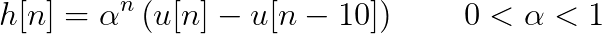

To appreciate how well a matched filter works in the presence of noise, let
us examine the estimation of the delay of an exponentially-decaying signal
segment. This exercise builds upon
Laboratory Exercise 5.1 and
Equation 9.13. The filter is described by:
(9.19)

The signal h[n – 21] is a delayed version of the filter.
The noise, N[n], is zero-mean, Gaussian, and independent
of the signal. The “corrupted” signal r[n] is given by
r[n] = h[n – 21] + N[n].
Starting from α = 0.9 and SNR = 1000:1, the
results in the bottom row appear to differ. Explain why this is
so.
According to
Section 5.1, we
should not expect that φrh[k]
is even. Nevertheless, it appears to be symmetric (even) about its
peak value. Explain why this is reasonable. (Note that the peak
positions are illustrated in
red.)
The peak positions of the two computations r[n]
⊗ h[-n] and r[n] ⊗
h[n] are shown. If we hold the SNR constant
at 1000:1. which computation—the correlation or the convolution—
gives a stable and correct estimate of the delay as we vary the
value of α?
If we hold the parameter α constant, which
computation—the correlation or the convolution—gives a stable and
correct estimate of the delay as we vary the value of the
SNR? At what value of the SNR do both techniques
cease to give a reliable estimate of the delay?
Which computation—the correlation or the convolution—gives the best
estimate of the delay as we vary the values of both α
and the SNR?